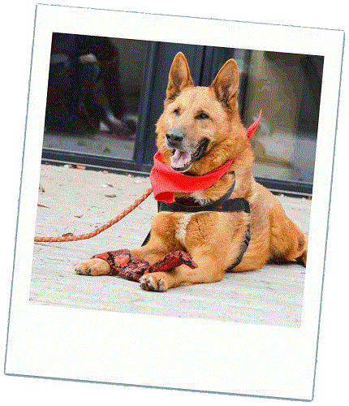

- Adopciaki.pl - strona, która pomaga dobrać psiaka do Twoich możliwości i upodobań
- Schronisko w Korabiewicach prowadzone przez Fundację Viva - dużo porad, można pojechać w weekend, wyjść z psem, wolontariusze dają dużo wsparcia po adopcji
- Wywiad z ekspertką, psim behawiorystą o adopcji psa ze schroniska na blogu pieswwarszawie.pl
- Psy przed adopcją i po - budujące :)
- Świetnie prowadzony blog Biały Jack, zawiera dużo porad co do wychowania, adopcji, szkolenia psa i przy okazji pokazuje, że mały śliczny rasowy piesek może być naprawdę trudny do wychowania
- Genialny filmik zrobiony przez Fundację AST, który pokazuje metamorfozę Basty, amstaffki odebranej z pseudohowli gdzie służyła jako maszynka do pieniędzy
- 